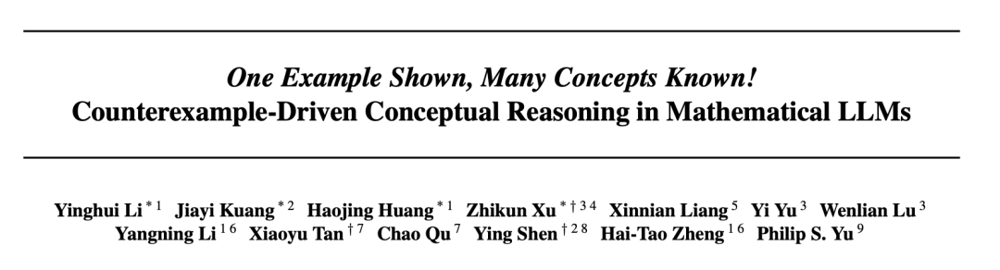
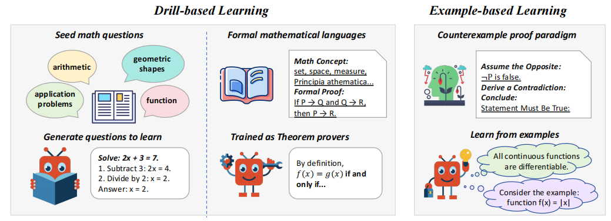
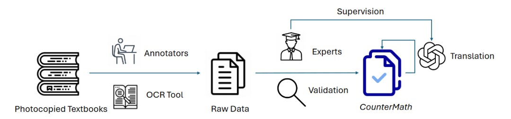
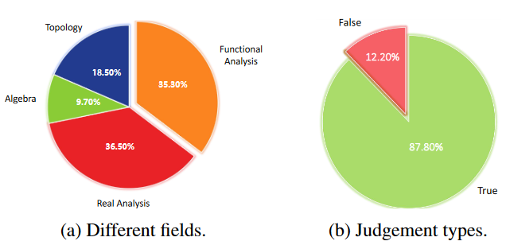
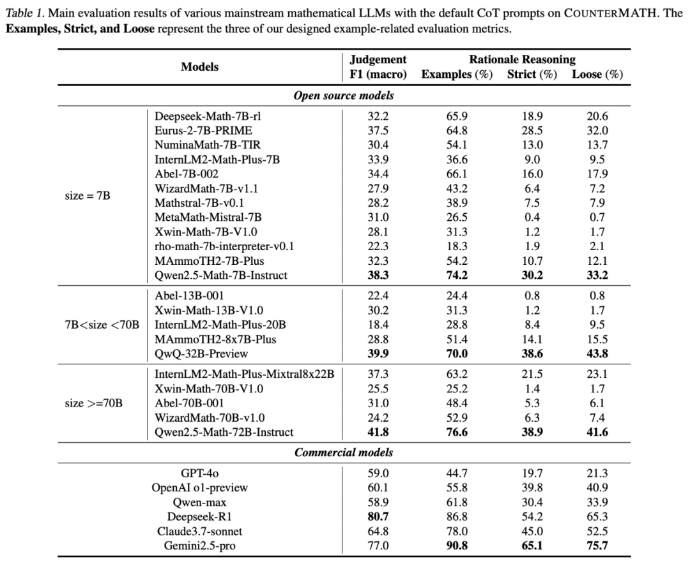
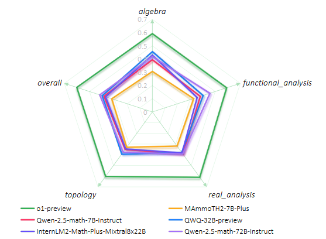
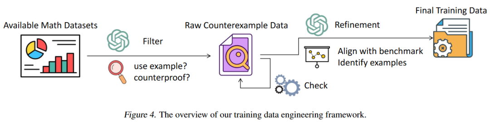
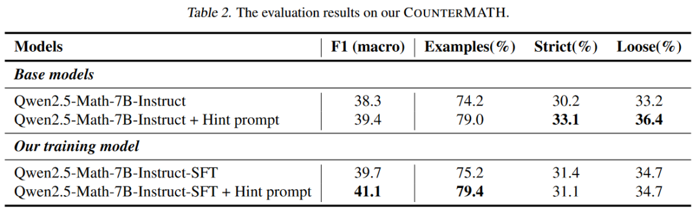
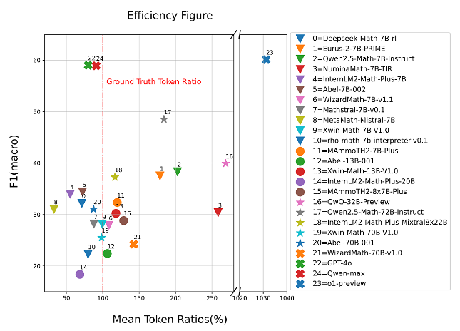

大模型真的懂数学吗？首个反例推理基准COUNTERMATH揭示真相!
"大模型能解高数题了，但它是真的理解了数学概念，还是只背会了题库套路？"
随着大语言模型（LLMs）在数学领域的应用越来越广，"模型是否真的具备数学推理能力" 成了学界热议的焦点。现在的训练模式大多让模型疯狂 "刷题"，但遇到复杂概念时，模型往往陷入 "表面模仿"—— 看似能解题，实则没吃透本质，换个陌生题型就翻车。
来自清华大学,中山大学等机构的团队提出了首个基于反例推理的数学概念评测基准COUNTERMATH，这项被ICML 2025接收的研究，就狠狠戳破了这个 "假象"：用 "举反例" 这一人类学数学的核心方法，检验大模型是否真的懂数学。他们还证明了：靠反例驱动的微调，仅仅依赖 1000 + 样本，就能让模型的数学推理能力 "脱胎换骨"，在多个数学推理基准测试中，7B模型甚至能超越72B模型性能！
📚 相关链接
📄 论文：https://arxiv.org/pdf/2502.10454 💻 仓库：https://github.com/THUKElab/COUNTERMATH 🏠 主页：https://countermath.github.io"刷题" 练不出真本事，例子理解才是关键
传统数学证明训练往往遵循让模型进行大量"刷题式"演练的范式：如图1所示，通过综合设计各种类型的题目，或者训练模型学习形式化的数学证明语言。然而，模型在遇到复杂数学概念时容易陷入"熟悉式"学习，仅仅只是记住了这些概念，而缺乏深层次的理解，因而难以在测试中灵活运用这些数学概念。
原因很简单：它记住的是 "题面套路"，不是 "概念本质"。比如问 "所有连续函数都可导吗？"，模型可能背过答案 "不是"，但它未必能举出 "魏尔斯特拉斯函数" 这个经典反例 —— 而能否举反例，恰恰是判断是否真理解的关键。
受人类数学教学中"反例证明"的启发，我们认为，利用举例子，尤其是举反例，可以极大地推动数学概念的理解和灵活的证明过程，既能揭示数学命题中的细微差别，也有助于模型掌握数学本质。在此背景下，我们希望突破现有LLMs在数学证明中仅停留在表层模式匹配的局限，提出了基于反例的数学推理评测基准COUNTERMATH。
COUNTERMATH旨在通过提供反例推理能力，来评估LLMs在大学层面区分数学术语和性质之间细微差别的能力。具体来说，我们从数学教材中收集了1,216条语句-推理对，重点关注在不寻常条件下使用反例对某些语句进行反证。在难度方面，COUNTERMATH涵盖了类似于PutnamBench 和Putnam - AXIOM的高级数学知识，两者都评估了LLMs中数学理解的深度。
除了在COUNTERMATH上广泛评估各种主流的数学LLM之外，我们还开发了一个自动获取基于反例的数学推理数据的框架，以便于收集相关数据进行进一步的模型训练。我们希望这种举反例的能力，不仅可以帮助模型提升在我们这一数学反例推理的基准上的性能，更可以在整个数学测评领域取得有效的提升，使模型真正具备更好的数学概念理解与灵活推理能力。
COUNTERMATH：从教材里 "挖" 出 1216 个反例难题
数据从哪来？
我们的数据集是由一系列聚焦于不同领域反例的数学教科书构建的，例如代数，拓扑，实分析和泛函分析。我们已经获得了原教材作者的同意，只将他们的出版物用于学术研究目的。由于原始数据来源为中文，我们还将数据集翻译成英文，创建了一个基于反例的数学概念推理基准，命名为COUNTERMATH。
我们完整的数据构建流程如图2所示，我们首先招募了几位的数据标注员，使用OCR工具从教材中提取出了1，274条语句-理据对。接下来，作者中具有应用数学学士学位的专家对上一阶段的所有数据点进行人工核对，根据每条语句的理由将其标注为"真"或"假"，并过滤剔除歧义对，由此产生了1216个数据样本作为我们数据集的最终版本。此外，由于数据来源为中文，我们使用GPT - 4o将数据集翻译成英文，并对翻译后的数据集进行了进一步的验证，以确保其正确性和适当性。
数据长啥样？
图3展示了我们构建的数据的一个例子，每条数据包含三个核心部分：
- 陈述（Statement）：待判断的数学命题（如 "所有有界数列都收敛"）；
- 理由（Rationale）：证明该命题真假的关键推理（如 "反例：(-1)^n 有界但不收敛"）；
- 判断（Judgement）：命题为真或假的结论。
上图是COUNTERMATH中的一个数据示例，该数据来源于《实分析中的反例》
陈述-理由对（statement-rationale）的分布情况如图4a所示。此外，我们统计了判断的分布情况，在图4b中给出。我们观察到，大多数语句都被标注为True。这可能是因为数据来源于数学教材，其中大多数语句用语正确，以避免误导读者，特别是数学新手。一般来说，这些陈述往往涉及几个大学级别的数学概念或性质，侧重于对数学的细致入微的理解。在实际应用中，由于表述简洁，这些陈述经常被用作与数学相关的研究生课程中的面试问题。
大模型集体 "翻车"？开源模型反例能力惨不忍睹
团队测试了 20 + 主流数学大模型，包括OpenAI o1 、Claude3.7等闭源模型，以及 Deepseek-Math、Qwen2.5-Math 等开源明星，结果堪称 "大型翻车现场"
基础判断：一半模型连 "真假" 都分不清
在最基础的 "命题真假判断" 上，先进的闭源模型如 OpenAI o1 正确率也仅 60.1%，开源模型大多在 30%-40% 徘徊。哪怕是参数高达 72B 的 Qwen2.5-Math-72B，正确率也只有 41.8%。
反例推理：多数模型 "不会举例子"
更致命的是推理过程 —— 团队设计了三个指标评估 "举反例能力"，结果：
- 超半数开源模型（如 MetaMath、Rho-math）仅在 20% 左右的题目中尝试举反例；
- 能举出与参考答案一致反例的模型更是凤毛麟角，MetaMath 的 "严格对齐率" 仅 0.4%，几乎等于 "瞎蒙"。
领域细分：拓扑和实分析成 "重灾区"
团队进一步对COUNTERMATH中四个不同的领域进行了细粒度的分析，挑选了不同参数大小的6个不同模型，具体结果如图６所示。我们注意到，从模型性能来说，o1在每个领域均大幅领先其余模型，而每个领域展现出的性能较为平均。其余的开源模型中，我们注意到在代数和泛函分析的性能普遍更优，而在拓扑和实分析的性能更差。这说明：大模型在高等数学的 "冷门领域" 存在严重知识缺口。
仅用 1025 个样本微调，模型直接 "逆袭"
反例驱动微调框架
团队提出了一个自动训练数据工程框架来获取训练数据。由于目前大多数LLMs无法提供令人满意的基于实例的数学证明，因此在数据收集时，我们从现有的人工编写的数据集中筛选数据，而不是直接生成反例数据。我们收集一系列已经经过严格标注与数据过滤的数学证明数据集，包括proofnet，naturalproof等数据，利用GPT-4o筛选出其中的使用了反例进行证明的数据。我们编写一系列数据筛选的准则，评判数据中是否采用了反证法进行证明，使用了反例进行说明，或举出特殊的例子。最终，我们从超过30K的数据中，筛选出1,025条数据。
COUNTERMATH上的评估结果。我们在COUNTERMATH上进行评估，希望证明这种举反例的方法能有效提高模型的高等数学概念推理能力。除了基座模型以外，我们还加入了与提示模型举反例的hint prompt的对比。结果显示，在仅仅只有1025条训练数据的情况下，我们训练后的模型在判断的准确性上超过了所有基础模型。训练后的模型也获得了更优的举例能力，最终无论是在举例的数量还是质量上，都较基础模型有了提升。当然，虽然我们构造的训练数据经过refinement之后尽可能地贴合了我们的COUNTERMATH的分布，但仍然是有一定差距的。由于我们只是简单地在1025条训练数据上进行了SFT的探索，所以在部分指标上略低于hint prompt下的模型，我们认为这是可以接受的。
分布外（OOD）基准上的评测结果。我们进一步在OOD的基准上进行评估，希望证明我们训练后的模型，不仅在专有的反例数学概念推理基准COUNTERMATH上有较好的能力，还可以将这种举反例的能力迁移到其他数学能力基准测试中，有着更为通用的性能提升。为了公平对比，我们使用了同样的prompt与设置，对基础模型和训练后的模型进行了评估。我们发现训练后的模型在两个被广泛使用的基准测试数据中均超过了基础模型，尤其是展现了比参数量更大的72B模型更优的性能。这很好地符合了我们的假设，当模型学会这种额外的使用例子进行推理的能力时，可以增强整个数学领域的概念推理能力。

使用Token分析
模型性能和token使用效率之间的关系是理解模型设计中trade-offs的关键因素。如图７所示，我们分析了平均token比率( % ，由模型在推理过程中实际使用的令牌数除以基本真值答案中的令牌数计算得到)，代表token使用相对于真实值的效率，与反映模型预测性能的F1分数之间的关系。o1-preview 和QwQ-32B-Preview 等推理模型在推理过程中使用了大量的token，但并没有导致F1分数的相应提高。这表明基准任务是非常困难的，简单地增加令牌推理的长度或细节并不一定能提高性能。Qwenmax 和GPT-4o等模型显示了令牌使用和性能之间很好的平衡。这些模型在保持令牌消耗接近真实令牌比例的同时，获得了相对较高的F1分数。这表明他们能够高效地执行精确推理，而不过度依赖额外的令牌使用。
结论：反例推理，让大模型真正 "懂" 数学
这项研究的价值不止于提出一个新基准。它用数据证明：
- 靠 "刷题" 堆出来的数学能力，经不起反例检验；
- 反例推理是大模型数学能力的 "短板"，但也是 "突破口"；
- 小样本微调就能显著提升模型的概念理解能力，为低成本优化大模型提供了新思路。
未来，当大模型不仅能解题，还能像数学家一样用反例 "挑错" 时，或许才算真正迈入了 "理解数学" 的门槛。
ICML 2025 数学推理 反例证明 概念理解 模型微调